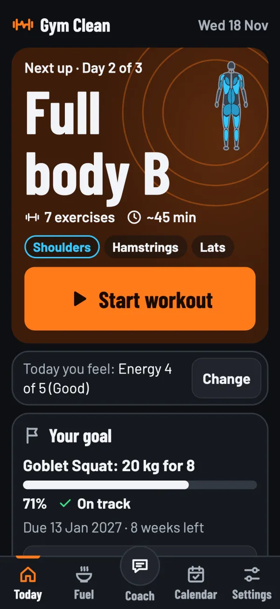
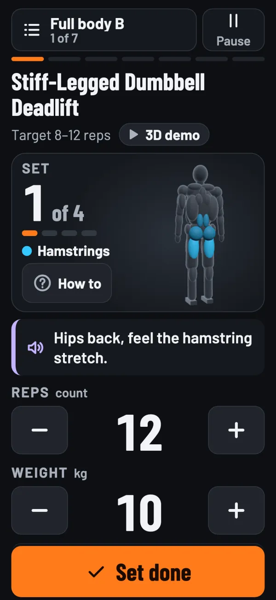
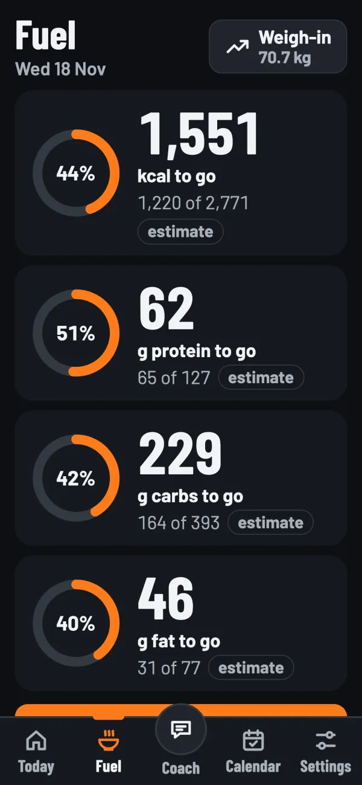

Gym Clean
Your pocket strength coach.
A guided workout on your phone: the next lift, the muscles it trains, big numbers you can read from across the room, and cues spoken out loud.
Open the appA look inside
-

Today: your next workout and the muscles it trains. -

During a set: big numbers and a spoken cue. -

Fuel: what is left to eat today, in plain numbers.
Everything stays on your phone
- Camera: reps are counted on the phone. No video is saved or sent.
- Your workouts, food and body numbers are stored only on your phone.
- Coach chat stays on your phone. Speech is turned into text on the phone and the audio is never stored.
- Apple Health (iPhone app) is read-only and stays on your phone.
- No account, no ads, no tracking. Backups are files you save yourself.
The one exception
Barcode lookup (Settings, Nutrition) is off until you turn it on. Then it sends only the barcode number to Open Food Facts to find the food, and only for a barcode not already in My foods. Nothing else goes with it.
This page has no scripts and loads nothing from other sites.